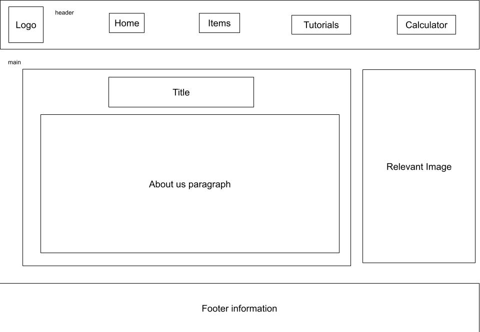
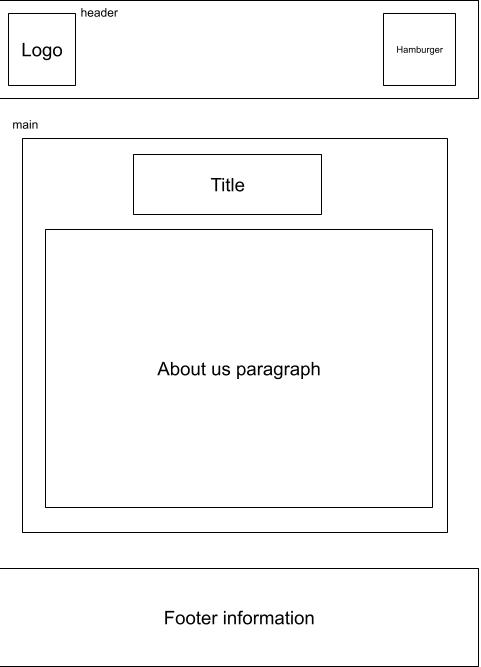

Site Name
Redstone 101 : I chose this site name because it will contain lots of simple information for beginners, simmilar to an indertuctory course at a university, but also because I think it a good search term that has already been used on existing fourms, and such would give my site more user traffic.
Site Purpose
This site will contain basic information and tutorials, usefull in creating various Minecraft redstone projects.
scenarios
What is a comparitor and why do I have to use it?
Why does this tutorial work for them but not for me?
Colour Schema
--primary-bg-colour: #80ff80;
--secondary-bg-colour: #1a1f24;
--primary-text-colour: #000000;
--secondary-text-colour: #ffffff;
Primary is for the main and secondary is used for header and footer.
Typography
Ill be using "Press Start 2P" font for headers, the rest will be in Arial, with Helvetica and sans-serif in case a font dosen't load.
Wireframes
Desktop
Mobil

